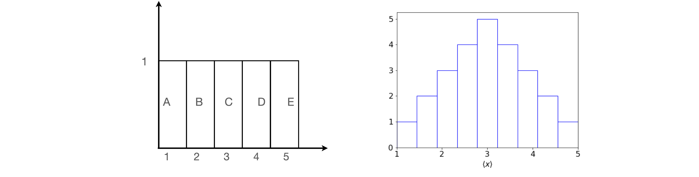

Characterizing experimental data. Accuracy, precision, mean and standard deviation¶
# import all python add-ons etc that will be needed later on
%matplotlib inline
import numpy as np
import matplotlib.pyplot as plt
from sympy import *
from scipy.integrate import quad
from scipy.stats import t,norm # statistical functions
init_printing() # allows printing of SymPy results in typeset maths format
plt.rcParams.update({'font.size': 14}) # set font size for plots
1.1 The Mean or Average value¶
If several readings have been taken of a quantity \(x\), for example a titration is performed \(N\) times with identical solutions in an attempt to be precise, the titration’s end-point volume will be quoted as the arithmetic sample average \(\langle x\rangle\) of all the \(n\) measurements. This is sometimes also labelled \(\bar x\) (pronounced ‘x-bar’) and the word ‘mean’ is often used instead of average. The arithmetic average is
where \(x_1+x_2+x_3\cdots x_n\) are the measurements. This average value will probably not be the same as any individual value and these will always be spread either side of the mean. The sum of the difference between each point and the average, is always zero; \(\sum_i(x_i-\langle x\rangle)=0\).
Figure 1. The experimental average value \(\langle x\rangle\) tends towards the population or theoretical mean \(\mu\) as the number of samples increase. The sample standard deviation \(s\) is also shown and this tends to a constant value of 1/4 as \(n\) increases. (Note the logarithmic abscissa scale). The samples are taken from a Normal distribution with \(\mu = 1/2\) and \(\sigma = 1/4\).
One trajectory showing the way the mean value is approached as the number of experiments is increased is shown in figure 1; the sample standard deviation \(s\) (equation 2) is also shown. The samples at each \(n\) are from a new list of length \(n\) selected at random a normal distribution (figure 4) with a mean \(1/2\) and a standard deviation \(1/4\). In many experiments, the inherent accuracy of each measurement may not be the same and then the mean and standard deviation have to be weighted to reflect this. This is described in Section 3.8.
1.2 Sample Standard Deviation and parent or population Variance¶
A measure of the spread of the results is the sample standard deviation \(s\). The square of the standard deviation is called the variance . The sample standard deviation is
and is sometimes called the root mean square (or rms) deviation. This formula produces an unbiased estimate of \(s\), but note that some authors define the standard deviation by dividing by \(n\) rather than \(n - 1\); there is not a single definition of \(s\); see Barlow (1989, p. 11). The standard deviation is one of a class of measures called dispersion indices ; range, quantile, skew, and kurtosis (peakedness) are others.
In words, the formula for s says ‘for each of the n measurements, subtract the average \(\langle x\rangle\) from each \(x\) value, square the result and then add up all the answers. Next, divide by the total number of measurements less one and finally take the square root’.
The principle of least squares is widely used in modelling or analysing data; see Section 5.2, and this approach minimizes a function such as
with respect to \(M\), where \(M\) might represent some ‘model’ which is an equation or single value describing a set of data. In the definition of the standard deviation \(s\), it appears that \(M = \langle x \rangle\), therefore, if \(s\) is a least squares estimate, the summation should be at a minimum when \(M = \langle x \rangle\). Differentiating the sum of squares with respect to \(M\) and setting the result to zero produces
or
showing that, indeed, \(M = \langle x \rangle\). The mean value makes the sum of squares a minimum, and in this sense it is the best estimate of the deviation.
Suppose that there is an underlying parent distribution whose width determines the standard deviation. This has a mean \(\mu\), called the population mean , and its standard deviation is \(\sigma\); Greek letters being reserved for parent quantities, then this parent distribution is what an infinite number of ideal experimental results would produce. This ideal distribution is assumed to be the normal (Gaussian) distribution, see Figs 3 and 4. (The other common distribution is the Poisson, figure 13 which approximates the normal when its mean is \(\approx 10\) or greater.) The sample mean \(\langle x \rangle\) is more likely than not to be different to the population mean \(\mu\). If it can be shown that the average of all sample means s equals the population or true mean value μ, then the sample mean is an unbiased estimate of the population mean.
The standard deviation and variance can also be defined with reference to the parent distribution and then this population or parent variance \(\sigma^2\) is
which assumes that \(\mu\) is known, whereas \(s\), equation 2, is obtained only from the data itself. The variance is the single most important parameter when describing the parent population. To calculate \(\sigma^2,\; \mu\) has to be known, but \(\mu\) can never be exactly known in any set of measurements. The best estimate of this has to be used instead and is obtained from the set of measurements; this is usually taken to be
which is an unbiased estimator of \(\sigma^2\). Strictly speaking, the equality symbol = should be replaced by \(\approx\) ‘approximately’ because this is an estimation; however, equality is usually used. The factor \(n/(n - 1)\) enters because of an argument from statistical theory. The term reflects the degrees of freedom left with which to describe the data. Each parameter that is defined is considered to impose a restraint on the data and is, roughly speaking, equivalent to removing one data point. The more parameters that are measured the fewer data points there are left to describe the data (Parratt 1971).
1.3 Standard Deviation in the Mean¶
If experimental measurements are repeated, slightly different values of the mean are expected because only a few of the possibly infinite number of values needed to define the true result can be measured. The difference between any two means would be expected to be less than the standard deviation in either set. The standard deviation of the means would then be written in the same way as equation 2 as
where \(\langle m \rangle\) is the average of the means of \(N\) separate experiments. To evaluate this summation directly would require a huge number of experiments, viz; \(nN\); however, a satisfactory formula is obtained by statistical theory and is
Experimentally, the square root makes improving precision quite a slow process; \(100\) measurements are needed to improve the signal to noise by \(10\) times, which means reducing the \(s_m\) relative to the mean by \(10\) times. The Hadamard transform method, Chapter 9, enables the experimenter to measure in groups and the noise can then be reduced more rapidly than \(N\).
The quantity \(s_m\) is sometimes called the estimated standard error on the mean or just the standard error on the mean or simply the standard error. To relate this to the population standard deviation,
however, this is also called the standard error. Clearly, these names are not fixed so it is always necessary to check the equation being used, which unfortunately, is not always given.
2 Central Limit Theorem¶
The mean \(\mu\) and standard deviation \(\sigma\) are used assuming that data is distributed normally. But many quantities measured are not expected to have a normal distribution; for example, when counting photons or particles, a Poisson distribution is produced which is quite unlike a normal distribution at small \(\mu\), see figure 13. The speed of a molecule follows a Maxwell - Boltzmann distribution (see chapter 3 Q54), which is clearly skewed or lopsided, again quite unlike a normal distribution. However, remarkably, if several measurements are taken of a given velocity, their distribution will be normal. This is what the central limit theorem predicts and although easy to demonstrate, it is harder to prove. It states that by taking many similar measurements from (almost) any type of continuous distribution, the result always approaches a normal (Gaussian) distribution. This population distribution has the theoretical form
where \(\mu\) is the mean of the distribution and \(\sigma\) the standard deviation. The central limit theorem forms the basis by which the standard deviation of a normal distribution is used to characterize data.
The reasoning put more technically is that the sample mean \(\langle x\rangle\), although an unbiased estimate, is unlikely to be exactly equal to the true population mean \(\mu\) and is itself subject to random variation. By repeating the sampling process, i.e. by repeating the whole set of measurements, a number of different estimates of \(\langle x\rangle\) are obtained which are distributed about the true value \(\mu\). To simulate this and illustrate the central limit theorem, suppose that there are five measurements A, B, C, D, and E and each is an experimental result with values \(1, 2, 3, 4\), and \(5\) respectively. Any other numbers could be used but these are easy to average. The distribution of the numbers is uniform as shown in figure 2.
Suppose that randomly selected pairs of these values are taken making \(2\)5 possible samples. The pairs are shown on the left of the table and the corresponding average (sample mean) is shown on the right. Looking at this table there are five entries with a value of \(3\), and only \(1\) entry each with a value of \(1\) or \(5\). If plotted as a histogram, this begins to look a little like a normal distribution; figure 2.

Figure 2. Uniform distribution and the (normalized) histogram formed by sampling pairs of numbers.
Using Python the Central Limit theorem can be demonstrated more convincingly as shown with the next algorithm. The random numbers are chosen from a uniform, i.e. flat, distribution between zero and one. Five samples are taken each time and the process repeated five thousand times; see figure 3 for the result. It can be seen that the sample averages that form the histogram are more closely clustered about the population mean and are therefore less variable than the original data. It can be shown that the variation in the mean, which is the uncertainty in the mean, equals the variation in \(\langle x\rangle\) divided by the sample size, \(\sigma^2/n\). With this in mind the normal distribution plotted on top of the histogram of the data is
Many other initial distributions can be chosen to start with besides the uniform distribution illustrated here. For (almost) all distributions, a normal distribution will eventually be formed, although this may require a huge number of calculations.
Figure 3. Illustrating the central limit theorem.
# Algorithm: Central limit
m = 5000 # number of reeat calculations
av= np.zeros(m,dtype=float) # array to hold data
x = np.linspace(0,1,100) # use to plot gaussian equation
n = 5 # number to average
for i in range(m):
av[i] = np.sum( np.random.rand(n) )/n # make average n points flat distribution
av_x= np.sum(av)/m # average x
sig = np.sqrt( np.sum( (np.random.rand(m) - av_x )**2 )/m ) # sigma calculated
gaus = lambda x,sig: np.exp(-(x-av_x)**2/(2*sig**2/n))/np.sqrt(2*np.pi*sig**2/n) # gaus distribution
# #remove hash symbols to plot data as in fig 3
#fig = plt.figure(figsize=(8,6) )
#plt.rcParams.update({'font.size': 16}) # set font size for plot
#plt.plot(x,gaus(x,sig),color='red') # plot gaussian function with mu and sigma
#plt.hist(av,bins=50,density=True,color='lightgrey',edgecolor='black') # plot histogram of data
#
#plt.xlabel(r'$\langle x\rangle$')
#plt.ylabel('number with '+r'$\langle x\rangle$')
#plt.axhline(1,linewidth=1,color='grey')
#plt.show()
3 Confidence intervals¶
The central limit theorem shows that repeated measurements follow a normal distribution (see Section 3.1) with a mean \(\mu\) and variance \(\sigma^2/n\) for n separate measurements. The mean \(\mu\) may be known from theoretical considerations or from other experimental data. The properties of the normal distribution are used to provide estimates of the probability that, by chance alone, a measurement of the mean will fall inside or outside a certain value.
The standard deviation of the mean is often referred to as the standard error on the mean and defined as \(\sigma_m = \sigma/\sqrt{n}\). This confirms that measurements get more precise with the square root of the number of measurements. If a new statistic \(Z\) is defined as
this is distributed as the standard normal distribution with a mean of zero and a standard deviation of one. Notice that \(Z\) increases as \(\sqrt{n}\). Because \(\langle x\rangle\), the experimental or sample mean value, is unlikely to be equal to \(\mu\), there is a need for a measure of the confidence that we have in \(\langle x\rangle\). From the properties of the normal distribution (see next section), there is a \(95\)% chance that \(Z\) falls within the range \(\pm 1.96\). This is written as
and hence
This is interpreted to mean that there is \(95\)% confidence that the population mean will fall in the interval \(\displaystyle \pm 1.96\frac{\sigma}{\sqrt{n}}\) and is written as
In practice, the standard deviation is almost never known and if the number of samples is large, typically \(\gt 25\), then \(\sigma\) can be replaced by \(s\) the sample standard deviation, and then
Confidence limits are not always used when quoting results and it is common to see \(\langle x\rangle \pm \sigma\) quoted instead. Unless this is qualified as being \(1\sigma,\; 2\sigma\) etc., what is implied by this is uncertain. If the error is \(\pm\sigma\) then \(\approx 68\)% of all measurements fall in this range. Table 1 gives other values.
Table 1. sigma’s¶
Sometimes, a statement may be made along the lines that a measurement has produced a result that is more than ‘five sigma from the mean’. This means that the chance of this occurring is \(1/25 \equiv 4\)%, which would suggest that it does not belong to the same distribution as other measurements. However, if only a few data points have been taken then there would be less confidence in assuming this, as to opposed to perhaps \(100\) values in the data set with the mean and standard deviation properly established.
However, the ‘five sigma’ statement can also be used with the normal distribution and this is far more common, particularly in particle physics. By integrating the distribution from \(-\infty\to x\) the cumulative distribution is obtained. Thus there is a \(50\)% chance of being within \(0.675\sigma\), (this is sometimes called the probable error), a \(68.5\)% chance of being within \(1\sigma\) and a \(95\)% chance of being within \(1.96\sigma\), and \(95.45\)% chance of being within \(2\sigma\) and so on. For \(5\sigma\) the chance is \(99.9999\)%, pretty much a ‘dead cert’.
3.1 The normal and standard normal distribution¶
The normal (Gaussian) distribution with mean \(\mu\) and variance \(\sigma^2\) has the form
which is normalised to one; \(\displaystyle \int_{-\infty}^\infty p(x)dx=1\). The mean, average, or expectation value of \(x\) is
and the variance is \(\displaystyle \int_{-\infty}^\infty (x-\mu)^2p(x)dx=\sigma^2\equiv \langle x^2\rangle-\langle x\rangle^2 \).
The standard normal distribution describes a Gaussian (bell-shaped) curve with a mean of zero and a standard deviation of one, viz.,
The total area under the curve is one and the area between symmetrically placed \(x\) values gives the probability of falling within that area. The area \(p(x)\) is the probability of an observation being between \(\pm x\);
The area within limits \(\pm 1.96\) is \(\mathrm{erf}(1.96/\sqrt{2}) = 0.950\); hence this is the \(95\)% chance as described by equation 6. In figure 4, the total area in yellow adds up to \(5\)% of the total, meaning that a value that differs from the mean should exceed \(\pm 1.96\) by pure chance only on \(5\)% of all measurements.
The probable error \(p_e\) divides the normal distribution area into two with areas placed symmetrically about zero. The areas are \(1/4:1/2:1/4\); the distribution’s \(x\) value is \(p_e = \pm 0.6745\sigma\). Some values of the area and hence the chance of a value occurring within different standard deviations of the mean is shown in Table 1.
Specific areas may be calculated using the cumulative distribution function, or directly by integrating the normal distribution from \(-\inf \to x\). For the reverse process - starting with the area to obtain the \(x\) value producing that area - the quantile function is used. For example, with the normal distribution with a mean of zero and standard deviation of one the calculation of the cumulative value is, for example usimng \(\sigma/2\), see table 1, as the value and using Python/Sympy
x = symbols('x')
w = 0.5
ans = integrate(exp(-x**2/2)/sqrt(2*pi),(x,-oo,w)) # integrate -infinity to w
float(ans)
The same integration can be done numerically using the ‘quad’ routine. Note that this routine returns two numbers, the integral’s value and the error, \(\mathtt{err}\).
fnorm = lambda x :np.exp(-x**2/2)/np.sqrt(2*np.pi)
ans, err = quad(fnorm,-np.inf,w)
ans

now using the built in cumulative distribution, where \(\mathtt{norm}\) is loaded as a library (from scipy.stats import norm, see top of page) and using \(\mathtt{cdf()}\) which is built in also, produces the same value.
cumul = lambda w: norm.cdf(w) # define function
cumul(w)

To find the percentage chance we recall that the cumulative value is that from \(-\infty\to x\) (in this example \(-\infty\to 0.5\)) but that the remaining probability of that to the right of \(x=1/2\) which is \((1-0.691)\). However the value we want is that in the middle of the curve, excluding both sides of the distribution, and is therefore \(100(1-2(1- 0.691))=38.3\)%, as in table 1. Using python this is
100*(1-2*(1 - cumul(w)))
Working the other way round, i.e. starting with the area and finding the \(x\) value we use the quantile function which is called .ppf() and putting in the value from the cdf it returns the original value, \(0.5\) in this case.
qtile = lambda w: norm.ppf(w )
qtile(0.69146246 )
In figure 4 the areas \(\pm 1.96\sigma\) are shaded. Calculating shows that the area from \(-\infty \to 1.96\sigma = 0.975\) Thus \(0.025\) is left and is the \(2.5\)% shown as shaded on the right of the figure. Accounting for both extreme regions gives the middle area as \(1 - 2(1-0.975) = 0.95\), and is the chance shown in table 1. If the distribution is not normal, for instance the \(t\) or \(\chi^2\) distribution a similar calculation applies but, naturally, produces different percentages.
The general form for a \((100 -\alpha)\)% confidence limit when the population standard deviation \(\sigma\) is known is
and when \(\sigma\) is unknown, the sample standard deviation is used
The term \(Z_{\alpha/2}\) is the percentage point of the standard normal distribution, i.e. the ‘% chance’ in table 1.
(i) Estimate K\(^+\) content of glass¶
Two hundred samples taken at random were obtained for the K\(^+\) content of the glass used to make Pyrex flasks. The mean value was found to be \(136.48\;\mathrm{\mu g}\) with a sample standard deviation of \(25.31\;\mathrm{\mu g}\). The calculation of \(95\)% and \(99\)% confidence limits about the mean mass follows directly from equation 11;
which would normally be rounded to \(136.5 \pm 3.5\), or to \(137 \pm 4\;\mathrm{\mu g}\) if one were being cautious. This result means that \(95\)% of the samples taken at random should fall between \(133 \to 141\;\mathrm{\mu g}\) and by chance alone, it could be expected that \(5\)% of results would be outside these limits. The \(9\)9% confidence limits produce \(136.5 \pm 4.62\;\mathrm{\mu g}\), which will round up to \(137 \pm 5\;\mathrm{\mu g}\).
3.2 Small sample confidence limits: Student’s t¶
When the number of samples is small, s may not be a very good estimate of \(\sigma\) and, in this case, Student’s ‘\(t\)’ test is needed. The distribution is similar in shape to the normal distribution, but is wider in the wings. It is characterized by one parameter \(t = n - 1\) where \(n\) is the number of samples being averaged, and \(t\) is called its ‘degrees of freedom’. When the sample size increases, the t distribution approaches the normal one. Using a similar argument to that for the normal distribution, the \(t\) distribution produces confidence limits,
where \(t_{\alpha/2}\) is obtained by integrating the distribution, just as was done for the normal distribution. Only a few values are used regularly, some of which are listed in Table 3. (Notice that in the table that \(t\) is one less than the number of data points.)
Table 3 Student’s t distribution¶
Figure 5. Student’s \(t\) distribution is wider in the wings than the normal distribution, which it approaches when \(v\) is larger that \(\approx 15\)
(ii) Response times¶
Some typical response times of a certain commercial mass spectrometry service are
and \(95\)% confidence limits need to be placed on the population mean \(\mu\). To calculate how many days on average it will be necessary to wait to be \(95\)% sure of obtaining the results of an analysis, use equation 12 with the \(t\) value taken from Table 3. As \(\sigma\) (population mean) is unknown and the sample is small then
The sample size \(n = 6\) so there are \(t = n - 1 = 5\) degrees of freedom, and from \(t\) distribution table \(t_{0.025} = 2.571\) for \(95\)% confidence. The \(0.025\) is used because this is the two sided value, the limit being \(2.5\)% to the far right and far left of the \(t\)-distribution, in the same way as that shown for the normal distribution in figure 4. The sample mean \(\langle x\rangle = 16.94\) days and the sample standard deviation \(s = 6.47\) days. Therefore, a \(95\)% confidence interval for \(\mu\) is given by
Rounding the answers gives \(17 \pm 7\) which is \(10 \to 24\) days and is a very wide variation. It would certainly be worth considering changing your supplier!
3.3 Critical values from cumulative Student’ s t distribution¶
To use Python to find the \(t\) values for n points with \(\alpha/2 = 0.025\) we follow the method used for the normal distribution but now with the \(t\) distribution. This means loading the library as ‘from scipy.stats import t,norm’ as shown at the top of this page. Looking at Table 3, with \(v=5\) and at \(95\)% the value is \(2.571\). Using the t.cdf function produces \(0.975\) which is the value fro \(-\infty\to 2.571\) and so the two tailed value is \(0.95\) or \(95\)%.
w = 2.571
v = 5
cumult = lambda w,v: t.cdf(w,v) # define function
cumult(w,v)
Note that the 95% confidence level has \(\alpha/2 = 0.025\) which is \(5/2\)% because the table is for ‘two-tailed’ values on the distribution and \(\alpha = 5\). The \(t\) value at \(95\)% and for seven points (or six degrees of freedom) is written as \(t_{0.025,6}\). Figure 4 shows two-tailed values on the normal distribution.
The quantiles, the values in Table 3, are found using the \(\mathtt{ppf()}\) function, i.e inverting the cdf and give
x = 0.975
n = 5
quant = lambda x,n: t.ppf(x, n ) # prec quantile for T distribution
quant(x,n)
which is the value in the table under \(95\)% and \(v=5\).
3.4 Hypothesis testing¶
Suppose that a micro-analytical laboratory has to be certified and one of the tests it has to perform is to determine the ratio of \(^{12}\)C / \(^{14}\)N on an unknown compound. The examiners know that the ratio should be \(50\) and a standard deviation of \(1/2\) is acceptable. The laboratory produces the following set of data,
and have calculated that they fall within the allowed error bounds. Do you agree?
To solve this problem, a slightly different approach has to be taken and this involves using a common approach to testing data by forming hypotheses. This means testing whether or not there is confidence in a given mean value. Some criterion or test statistic is computed and used to make a decision. When using these tests, it is always assumed that the underlying parent distribution is normal and that the samples are independent of one another. Two related statistics are needed. When the population standard deviation \(\sigma\) is known (it is \(1/2\) in the problem), the following statistic can be used;
This statistic should follow a normal distribution, and if the experimental mean is going to converge on \(\mu_0\), if sufficient samples could be taken, then it would be expected that \(z_0\) is ‘close’ to zero because \(\langle x\rangle\to \mu_0\). The problem is to find critical values with which to test, with a certain confidence, how approximate the statement \(\langle x\rangle\approx \mu_0\) actually is. For example, if \(z_0\) is greater than \(\pm 1.96\) then with \(95\)% certainty \(\langle x\rangle\ne \mu_0\); however, we would still expect to observe \(\langle x\rangle\approx \mu_0\) on \(5\)% of occasions. Thus, large values of \(z_0\) means that the experimental mean is probably not the same as the population mean. The data produces
This is less than \(1.96\) which is the value needed for \(95\)% acceptance with a normal distribution, so the conclusion would be that the lab had produced an acceptable set of data. However, the number of samples is small and this last calculation assumes that many measurements have been taken. The statistic would be more discriminating if a second test were used based on the \(t\) distribution. In this case, the sample standard deviation \(s\) is used rather than \(\sigma\), making the statistic subtly different
Calculating again with \(s = 0.466\) gives \(t_0 = 1.33\) and from the \(t\) distribution, with seven degrees of freedom at the \(95\)% level, \(t_{025,7} = 2.365\). As \(t_0\) is less than this and \(z_0\) is less than \(1.96\), although this is a less critical test, the conclusion reached is that with \(95\)% confidence the data is consistent with a population mean of \(50\) and standard deviation of \(1/2\) and the lab is up to standard.
3.5 Comparison of two means¶
When a mean value has been obtained, to eliminate systematic errors it is necessary to compare this with another determination, perhaps done on another day, or to compare with a result from different apparatus or with a literature result. The two means are only samples from the true distribution and should not be very different from one another as they are supposedly measuring the same thing. The difference in means should therefore be normally distributed about the true difference \(\mu_1 - \mu_2\), which in turn, should be zero. The simplest test is to use the propagation of errors formula, see Section 4, to compare the difference in the means \(\langle x\rangle_1-\langle x\rangle_2\) with the difference in standard deviation,
If the difference is less than the standard deviation, the two results are probably acceptable.
When there are only a few measurements, two for example, it is natural to try to use the \(t\) distribution to quantify their difference which can be done in the following manner after first assuming that the population variances are not different, i.e. \(\sigma_1^2 = \sigma_2^2 = \sigma^2\), which means that the data is measuring the same thing. The pooled variance is
where data set 1 with mean \(\langle x \rangle_1\) is the average of \(n_1\) measurements and similarly for set 2. This variance has \(n_1 + n_2 - 2\) degrees of freedom. The \(t\) test statistic is
which is expected to follow a \(t\) distribution with \(n_1 + n_2 - 2\) degrees of freedom. If this \(t_0\) exceeds the critical value set by the percentage points of the \(t\) distribution, then it is clear that the means are not the same. Confidence intervals, at \(95\)%, for the difference between population means \((\mu_1 - \mu_2)\) may be obtained using
(iii) Comparing columns yields in chromatography¶
The yields of two nominally identical columns used for chromatographic separation have been measured. There are nine and eight experiments on each column under identical experimental conditions and the subsequent yield (mg) for each is as follows:
To determine if there is evidence of a ‘significant’ difference in their yield (at the \(95\)% level) the mean and standard deviation for each sample are calculated, then \(t_0\) using equation 16, and this compared with the value from the \(t\) distribution. The data produces
The \(t\) distribution at the \(95\)% level (two-tailed distribution at \(0.025\), with \(t = n_1 + n_2 - 2 = 15\) degrees of freedom) has a value \(2.13\) (see Table 3) and as this is smaller than the \(t_0\) calculated from the data, we conclude that the two sets of data are different. The confidence limits (equation 17) are
making the lower bound \(4.47 - 3.8 = 0.65\) mg and the upper bound \(+8.2\) mg. Thus, the difference in mean value at the \(95\)% level is \(0.65 \le \langle x\rangle_1-\langle x\rangle_2 \ge 8.2\) mg which means that it is possible to be \(95\)% confident that column 1 produces between \(0.65 \to 8.2\) mg more on average that column 2.
(iv) Comparing fluorescence yields¶
When repeated measurements are made on the same instrument they are likely to be correlated and therefore not independent of one another. In this example, the difference in the experimental values is examined using the \(t\) test rather than comparing the two means.
Consider measuring fluorescence from the dye thionine, which is known to intercalate into calf thymus DNA. One sample is treated with protein and measured to see if this has an effect on the amount of fluorescence observed. The data (in arbitrary units) for the fluorescence intensity was as follows:
The mean value of the difference is \(-4.87\) and the sample standard deviation \(4.06\). The \(t_0\) statistic (equation 15) is \(-3.18\) with a population mean \(\mu_0 = 0\). From the \(t\) distribution table with six degrees of freedom \(t_{0.025,6} = 2.45\) and as \(|-3.18| \gt 2.45\) the protein does have an effect at the \(95\)% level and the fluorescence intensity is different between the two sets of measurements.
3.6 Chebychev’ s rule, Chauvenet’s criterion and outliers¶
Sometimes data points seem to be too far from the trend exhibited by all the others and there is then a temptation to remove such points. This must always be resisted. One famous consequence of removing data led to the hole in the Antarctic ozone layer being missed. As the New Scientist (31 March 1988) put it, ‘So unexpected was the hole, that for several years computers analyzing ozone data had systematically thrown out the readings that should have pointed to its growth.’ However, it should be remembered that by the random statistical nature of noise adding to any measurement that deviations, often large ones, are to be expected. Note also that the process of smoothing data is akin to removing outliers and should be avoided, and in some settings, clinical ones for example, no data should ever be disregarded.
Chebychev¶
When outlying points are found in data, the obvious thing is to check that no numerical or transcriptional error has occurred, then go to the instrument used and check that a simple error has not been made, such as using the wrong solvent or a mistake in the concentration, or amplifier setting and so forth. The instrument could be checked out with a known reference but if everything turns out satisfactorily then it must be assumed that the data point is the result of random chance. Highly unlikely but not impossible. If the experiment cannot be repeated and the data still has to be dealt with, then the Chebychev rule may be useful.
This gives a number to the probability that a random variable or the absolute value from a mean \(| x - \langle x \rangle |\) exceeds a given number. Suppose that this number is \(k\sigma\) where \(k \gt 1\) is an integer and \(\sigma\) is the standard deviation, then the condition is
This means that the chance that \(| x - \langle x \rangle |\) is numerically greater than \(k\sigma\), is less than \(1/k^2\), or, equivalently, that no more that \(1/k^2\) data points should be more than \(k\) standard deviations from the mean or, which is the same, that \(1 - 1/k^2\) are within \(k\) standard deviations. The value of \(k \gt 1\) is for us to choose. The data described above in Section 3.4 for the \(^{12}\)C / \(^{14}\)N ratio has a mean of \(50.22\) and a (sample) standard deviation of \(s = 0.466\). If \(k = 2\) is chosen then \(1 - 1/4 = 0.75\) or \(75\)% of the values should fall in the range \(50.22 \pm 2 \cdot 0.466\). If \(k = 3\), then \(89\)% of values fall in the range \(50.22 \pm 3 \cdot 0.466\) and for any points that do not fall in this range there is a sound reason for ignoring them.
Chauvenet¶
An alternative method of removing outliers has been given by Chauvenet and this considers both the number of data points and their value. We use this method to reject a data point if its deviation from the mean have a probability of occurring that is less than \(1/(2n)\) for \(n\) data points.
In the set of data \(89,\;120,\;94,\;110,\;105,\;108,\;85,\;83,\;101,\;95\) the largest value \(120\) may be an outlier. This point is \(21\) from the mean \(\langle x\rangle = 99\) and we check that the probability from \(\langle x\rangle -21 \to \langle x\rangle +21\) is less that \(1/2n\) which is \(1/20\) as there are 10 points.
This value is obtained from the integral of the normal distribution, with limits \(78\) and \(120\) the probability of observing a value in this range is
Evaluating this integral produces \(0.92\) making \(1-p = 0.078\) and as this is less than \(1/20\) the data point is retained.
As the integral can be evaluated algebraically and then limits applied we can use this result, which is
where erf is the error function. An example is shown below.
# Algorithm: Chauvenet criterion to test for outliers
c = np.array([89,120,94,110,105,108,85,83,101,95])
n = len(c)
limit= 1/(2*n)
xbar = np.sum(c)/n
x0 = c[1] # point 1 in the list
if x0 > xbar:
b = x0
a = xbar - np.abs(xbar-x0)
else:
a = x0
b = xbar + np.abs(xbar-x0)
print('{:s}{:6.3f} {:6.3f}'.format('limits ', a,b))
s = 0
for i in range(n):
s = s+(c[i]-xbar)**2
sig = np.sqrt(s/(n-1))
print('{:s}{:6.3f} {:6.3f}'.format('mean and std dev ',xbar,sig))
p = 0.5*(erf((b-xbar)/(sig*np.sqrt(2) )) - erf((a-xbar)/(sig*np.sqrt(2) )) )
print('{:s} {:6.3f} {:s} {:6.3f}'.format('1-p =', 1-p, ', 1/(2n) =', 1/(2*n)))
if 1 - p > 1/(2*n):
print('retain point')
else:
print('remove point')
limits 78.000 120.000
mean and std dev 99.000 11.907
1-p = 0.078 , 1/(2n) = 0.050
retain point
and as the \(1-p\) is greater than \(1/(2n)\) we do not reject the data point.
3.7 Standard deviation in a single measurement¶
When only a single measurement has been made, as is often the case in an undergraduate laboratory, the question arises as to what standard deviation it should be given. In such laboratories, many other measurements will undoubtedly have been made so the mean and standard deviation for the experiment will be known. However, in the absence of such knowledge we can appeal to the Poisson distribution (see Section 6.4) to determine what value should be given to the standard deviation. It turns out that by calculating the maximum likelihood function that the standard deviation is the square root of the result itself. Thus if the result has a value \(k\) then \(\sigma_k =\sqrt{k}\).
3.8 Weighting¶
In Chapter 1.9.13 the average energy and average length of trans and gauche butane molecules was calculated by weighting the individual values according to the Boltzmann distribution. Experimental measurements are similarly not always of equal precision and this may be inherent in the nature of the observation. When counting photons, for instance, the precision of each measurement is proportional to the number of counts. For example, the intensity of an emission spectrum varies with wavelength; the precision is therefore different at different wavelengths. Alternatively, it may be that one instrument has twice the resolution of another or simply it may be that one experimentalist is better than another; nevertheless, the average has to be taken.
If two measurements of \(x\) are made and \(x_1\) is twice as precise as \(x_2\), then the weighted average is made in the proportions, \(\langle x\rangle = (2x_1 + x_2)/3\). In the general case, if \(w_i\) are the weights, then
This equation means that the contribution of each measurement to the average is in proportion to \(w\) unweighted measurements. This formula has been used in several other guises in other chapters to estimate an expectation value, when \(w_i\) was called the distribution of \(x_i\) rather than a weighting. The weighted standard deviation is
For experimental measurements, weighting is optimal if it is the reciprocal of the variance, \(w_i=1/\sigma_i^2\) and \(\sigma_i\) must be determined for each of the \(i\) observations. In many cases the \(\sigma\) will be equal to one another, then \(\displaystyle \langle x \rangle =\frac{1}{N}\sum_ix_i\), which is the unweighted mean of \(x\). The variance of the weighted average is
Weightings ensure that more importance is given to the more precise measurement because the smaller the standard deviation is, the larger is the weighting given to it.
(v) Spectral lines¶
Suppose that on one instrument a line in the SO\(_2\) infrared spectrum is measured at \(550\;\mathrm{ cm^{-1}}\) with a standard deviation of \(\sigma = 10\;\mathrm{ cm^{-1}}\); another instrument is then used with \(\sigma = 5\;\mathrm{ cm^{-1}}\) and produces \(555\;\mathrm{ cm^{-1}}\). The unweighted average is \(552.5\;\mathrm{ cm^{-1}}\), while the weighted average of the two measurements is \(554\;\mathrm{ cm^{-1}}\), which is close to that of the higher resolution instrument as might be anticipated.
If three measurements are made of a rate constant with values \((3.16 \pm 0.03)\cdot 10^7, (3.21 \pm 0.05)\cdot 10^7\), and \((3.14 \pm 0.02)\cdot 10^7\;\mathrm{ s^{-1}}\), the errors are then taken to be the standard deviations and equations 18,19 are used. The best combined rate constant is \((3.15_2 \pm 0.014)\cdot 10^7\;\mathrm{ s^{-1}}\).
In many experiments, the standard deviation can be found by looking at an instrument’s specification, where a resolution of a certain number of wavenumbers or millivolts, and so forth, is usually given. In other cases this may have to be estimated from the data itself and this can be difficult to do point by point. However, one case in which the standard deviation is known exactly is in a particle or photon counting experiment because the arrival of photons at the detector is Poisson distributed where \(\sigma^2 = \mu\) and then \(w_i = 1/\mu_i\) where \(\mu_i\) is the average number of counts in the \(i^{th}\) measurement. Fluorimeters often use photon counting to measure fluorescence and phosphorescence spectra, and the standard deviation can then be measure directly from the data.
4 Propagation or combination of errors¶
In many experimental situations, a measurement does not always produce the final result, which will be obtained from further calculations, and may also involve other experimental measurements. For example, the measured value and its associated error may have to be exponentiated and then multiplied by another quantity with its error.
The formula for error propagation (or combination) can be determined by expanding the required function as a Taylor series about its mean value and substituting the result into the variance equation 3; see Bevington & Robinson (2003) or Barlow (1989) for the proof. If the functional form is written as \(y = f (u, v)\), then the variables that have been measured are \(u\) and \(v\) and their respective standard deviations \(\sigma_u\) and \(\sigma_v\). The variance in the final result \(y\) is
where \(\sigma_{uv}^2\) is the covariance between the two variables. This is always assumed to be zero, i.e. the result of one measurement is not influenced by the other; therefore, the result to use is
If there are more than two variables, the extra terms are added in the same way;
(vi) Gas law¶
The gas law states that \(p = nRT/V\), and the volume, temperature, and number of moles have been measured, each with their standard deviations. The standard deviation of the pressure is found by taking the partial derivatives of each variable in turn, while holding the others constant and substituting into equation 21. The variables are \(n\equiv u,T\equiv v,V\equiv w\),
which can be simplified by factoring out \((R/V)^2\). The relative or fractional uncertainty is found by dividing this result by \(p^2\) producing, in this case, the simpler result,
(vii) Vapour pressure¶
The vapour pressure (in torr) of a certain organic liquid has the form \(\ln(p) = mT + c\) and the values of the constants \(m\) and \(c\) were obtained from a least squares analysis of a plot of log pressure vs \(1/T\). The gradient produced \(m = -5390 \pm 33\) K and the intercept \(c = 21.89 \pm 0.099\). To calculate the liquid’s normal boiling temperature, i.e. the boiling temperature when \(p = 760\) torr or \(1\) atm. pressure, the equation must be rearranged to,
making \(T = 353.29\) K. The pressure is written as \(760/1\) as a reminder that the log must be dimensionless. Using equation 21, the error in this determination can be calculated with \(\sigma_m = 33,\; \sigma_c = 0.099\) and gives
Completing the differentiations and substituting values gives \(\sigma_T=3.15\) K. The final answer produces a boiling temperature = \(353 \pm 3\) K. The Python/Sympy calculation, which also performs the differentiation, is
m, p, c, sm, sc, sT = symbols('m, p, c, sm, sc, sT')
T = m/(ln(p) - c)
sigTsqrd = (diff(T,m))**2*sm**2+(diff(T,c))**2*sc**2
sigTsqrd
sig = sqrt(sigTsqrd)
sigT = sig.subs(p,760).subs(m,-5390).subs(c,21.89).subs(sm,33).subs(sc, 0.099)
sigT.evalf(3)
(viii) Vapour pressure continued¶
Continuing with the last example, suppose that the vapour pressure is required and that the temperature has been measured as \(353 \pm 3\) K, and again \(m = -5390 \pm 33\) K and \(c = 21.89 \pm 0.099\). In this case, \(p = e^{m/T +c}\) and the derivatives produce
and working out the terms produces a standard deviation of \(141\) torr and a pressure of \(750\) torr. The resulting standard deviation might seem unusually large, but this is caused by the exponential nature of the pressure equation having a great sensitivity to temperature.
4.1 Table of some error propagation formulae¶
The following table gives some examples of frequently met functions. The variances \(\sigma_u^2\) and \(\sigma_v^22\) are assumed to be known. The total variance \(\sigma^2\) is shown; remember to take the square root before using and note that σ 2 is always positive. The equation to use for many variables is
4.2 Matrix formulation.¶
Barlow (1989) demonstrates that equation 20 can be written in a matrix form, which does not immediately seem to offer any advantage, but this becomes clearer for problems that are more complex. The matrix equation is
where \(V_\sigma^2\) is a square matrix of variances and \(G\) a (Jacobian) matrix of partial derivatives. \(V\) is the matrix of the variances for each variable. The total variance is the sum of the terms in \(V\), which may be calculated as
where \(U\) is a row matrix where each term is one. In example (vii) the matrix equation is written as
and then
4.3 Maximum Likelihood Method. Parameter estimation:¶
The variance and mean have been used in our calculations on the assumption that they were the ‘best estimation’ of these properties, which means that they are as close as possible to the true values for the underlying process given that only a limited number of measurements are taken. Using the Maximum Likelihood method these estimates, such as mean and variance, can be found in terms of the measured values which we call \(x_i\).
A series of measurements of the same thing will always have a probability distribution \(f(x,\theta)\) with measured values \(x_1,x_2\cdots\) and the distribution will always depend on some unknown parameter \(\theta\), for example it could be the the mean. The likelihood function of observing a series of events is therefore the product of individual events, viz, \(L(\theta) = f(x_1,\theta) f(x_2,\theta) f(x_3,\theta)\cdots f(x_n,\theta)\). What we want to know is what quantity best describes the quantity \(\theta\), i.e what is the most likely value of this quantity. This can be found by differentiating \(L\) with respect to this quantity which is often the mean or variance, then setting the value to zero in the usual way of finding a maximum.
Suppose that the process measured follows a normal distribution but with an unknown mean \(\mu\) but known variance \(\sigma^2\). The likelihood function is
and it is a product as this is the probability of observing \(n\) events one after the other. Because of the probabilities are multiplied together, mathematically it is far, far easier to take the log first, because this changes the product into a sum, then differentiate. The maximum of the log will be the same as that of the function itself.
and differentiating by \(\mu\) and set to zero to find the maximum gives
thus the mean value is
which is what we had assumed anyway, and this shows that it is the most likely, i.e. the best estimate of the true value when only \(n\) measurements are made. By assuming that the variance is also unknown by differentiating wrt. \(\sigma\) and setting the result to zero, this is found to be
The Poisson distribution, used for particle/photon counting or other infrequent but numerous random events (see section 7) has the likelihood function
taking the log gives \(\ln(L)=-n\mu+\sum_i x_i\ln(\mu) -\sum_i x_i!\) and differentiating
then the mean value \(\mu\) is the best estimator if \(\displaystyle \mu=\frac{1}{n}\sum_{i=0}^n x_i\)